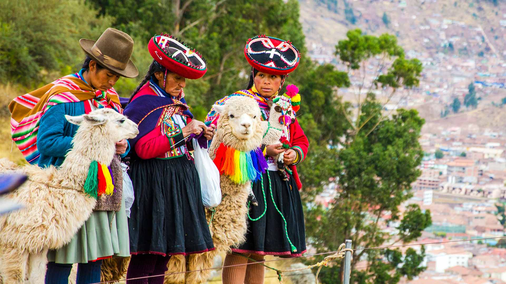

Quechua
Historia
El pueblo quechua tiene sus raíces en las antiguas civilizaciones andinas y alcanzó gran desarrollo durante el Imperio Inca. Su lengua, el quechua, se convirtió en uno de los idiomas más difundidos de Sudamérica y aún hoy es hablada por millones de personas en Perú, Bolivia, Ecuador y otras regiones andinas.
Contribuciones culturales
Los quechuas destacaron por su avanzado sistema agrícola en terrazas, que permitió cultivar en zonas montañosas del altiplano. También desarrollaron conocimientos sobre irrigación, conservación de alimentos y arquitectura en piedra. Su tradición textil refleja símbolos de identidad, cosmovisión y conexión con la naturaleza. Además, preservaron una rica tradición oral transmitida mediante mitos, leyendas y música andina.